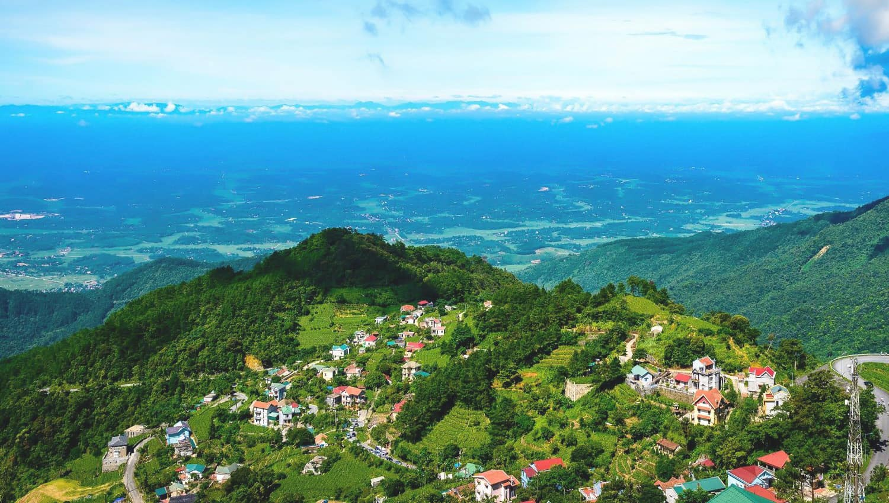

Interdisciplinary research and challenges
Where mathematics, modeling and computing meet, and what breaks at the seams.

Vietnam Academy of Science and Technology · Centre national de la recherche scientifique
Interdisciplinary Data Science From Mathematics, Modeling to Computing
The school brings together leading researchers in mathematics, modeling and computer science from Vietnam and France, under the collaboration between VAST and CNRS.
It gives senior researchers, young researchers, PhD candidates and master's students from both countries a place to deepen their knowledge, present current work, build professional networks and shape joint projects for the years ahead.
Four days are structured by research area: sessions on the principles of mathematics and modeling first, then advanced topics in computing, with flash communications and poster sessions at the end of each of the first two full days. An optional two-day tour of Ha Long Bay follows the closing session.
The program is built around seven themes. The list is not exhaustive — related work is welcome in the flash communication and poster sessions.
Where mathematics, modeling and computing meet, and what breaks at the seams.
Belief functions, quantum and combinatorial optimization, spin models on networks, numerical analysis.
Automata networks, random walks, scheduling, real-time simulation with hybrid modeling, agent-based simulation.
Virtual machine introspection, data transfer in operating and distributed systems, networks and security.
Learning for data assimilation, generative AI, frugal AI, graph neural networks, reinforcement and few-shot learning.
DNA storage and bioinformatics, high-stakes computer vision, big data for decision-making.
PhD students and young researchers present ongoing work in 180 seconds, then discuss at the poster boards.